“The simple graph has brought more information to the data analyst’s mind than any other device.” — John Tukey
R has several systems for making graphs, but ggplot2 is one of the most elegant and most versatile. ggplot2 implements the grammar of graphics, a coherent system for describing and building graphs. With ggplot2, you can do more and faster by learning one system and applying it in many places.
This chapter will teach you how to visualize your data using ggplot2. We will start by creating a simple scatterplot and use that to introduce aesthetic mappings and geometric objects – the fundamental building blocks of ggplot2. We will then walk you through visualizing distributions of single variables as well as visualizing relationships between two or more variables. We’ll finish off with saving your plots and troubleshooting tips.
1.1.1 Prerequisites
This chapter focuses on ggplot2, one of the core packages in the tidyverse. To access the datasets, help pages, and functions used in this chapter, load the tidyverse by running:
library(tidyverse)
── Attaching core tidyverse packages ──────────────────────── tidyverse 2.0.0 ──
✔ dplyr 1.1.4 ✔ readr 2.1.5
✔ forcats 1.0.1 ✔ stringr 1.5.2
✔ ggplot2 4.0.0 ✔ tibble 3.3.0
✔ lubridate 1.9.4 ✔ tidyr 1.3.1
✔ purrr 1.1.0
── Conflicts ────────────────────────────────────────── tidyverse_conflicts() ──
✖ dplyr::filter() masks stats::filter()
✖ dplyr::lag() masks stats::lag()
ℹ Use the conflicted package (<http://conflicted.r-lib.org/>) to force all conflicts to become errors
In addition to tidyverse, we will also use the palmerpenguins package, which includes the penguins dataset containing body measurements for penguins on three islands in the Palmer Archipelago, and the ggthemes package, which offers a colorblind safe color palette.
library(palmerpenguins)
Do penguins with longer flippers weigh more or less than penguins with shorter flippers? You probably already have an answer, but try to make your answer precise. What does the relationship between flipper length and body mass look like? Is it positive? Negative? Linear? Nonlinear? Does the relationship vary by the species of the penguin? How about by the island where the penguin lives? Let’s create visualizations that we can use to answer these questions.
The penguins data frame
You can test your answers to those questions with the penguinsdata frame found in palmerpenguins (a.k.a. palmerpenguins::penguins). A data frame is a rectangular collection of variables (in the columns) and observations (in the rows). penguins contains 344 observations collected and made available by Dr. Kristen Gorman and the Palmer Station, Antarctica LTER2.
To make the discussion easier, let’s define some terms:
A variable is a quantity, quality, or property that you can measure.
A value is the state of a variable when you measure it. The value of a variable may change from measurement to measurement.
An observation is a set of measurements made under similar conditions (you usually make all of the measurements in an observation at the same time and on the same object). An observation will contain several values, each associated with a different variable. We’ll sometimes refer to an observation as a data point.
Tabular data is a set of values, each associated with a variable and an observation. Tabular data is tidy if each value is placed in its own “cell”, each variable in its own column, and each observation in its own row.
In this context, a variable refers to an attribute of all the penguins, and an observation refers to all the attributes of a single penguin.
Type the name of the data frame in the console and R will print a preview of its contents. Note that it says tibble on top of this preview. In the tidyverse, we use special data frames called tibbles that you will learn more about soon.
penguins
# A tibble: 344 × 8
species island bill_length_mm bill_depth_mm flipper_length_mm body_mass_g
<fct> <fct> <dbl> <dbl> <int> <int>
1 Adelie Torgersen 39.1 18.7 181 3750
2 Adelie Torgersen 39.5 17.4 186 3800
3 Adelie Torgersen 40.3 18 195 3250
4 Adelie Torgersen NA NA NA NA
5 Adelie Torgersen 36.7 19.3 193 3450
6 Adelie Torgersen 39.3 20.6 190 3650
7 Adelie Torgersen 38.9 17.8 181 3625
8 Adelie Torgersen 39.2 19.6 195 4675
9 Adelie Torgersen 34.1 18.1 193 3475
10 Adelie Torgersen 42 20.2 190 4250
# ℹ 334 more rows
# ℹ 2 more variables: sex <fct>, year <int>
This data frame contains 8 columns. For an alternative view, where you can see all variables and the first few observations of each variable, use glimpse(). Or, if you’re in RStudio, run View(penguins) to open an interactive data viewer.
With ggplot2, you begin a plot with the function ggplot(), defining a plot object that you then add layers to. The first argument of ggplot() is the dataset to use in the graph and so ggplot(data = penguins) creates an empty graph that is primed to display the penguins data, but since we haven’t told it how to visualize it yet, for now it’s empty. This is not a very exciting plot, but you can think of it like an empty canvas you’ll paint the remaining layers of your plot onto.
ggplot(data = penguins)
Next, we need to tell ggplot() how the information from our data will be visually represented. The mapping argument of the ggplot() function defines how variables in your dataset are mapped to visual properties (aesthetics) of your plot. The mapping argument is always defined in the aes() function, and the x and y arguments of aes() specify which variables to map to the x and y axes. For now, we will only map flipper length to the x aesthetic and body mass to the y aesthetic. ggplot2 looks for the mapped variables in the data argument, in this case, penguins.
The following plot shows the result of adding these mappings.
ggplot(data = penguins,mapping =aes(x = flipper_length_mm, y = body_mass_g))
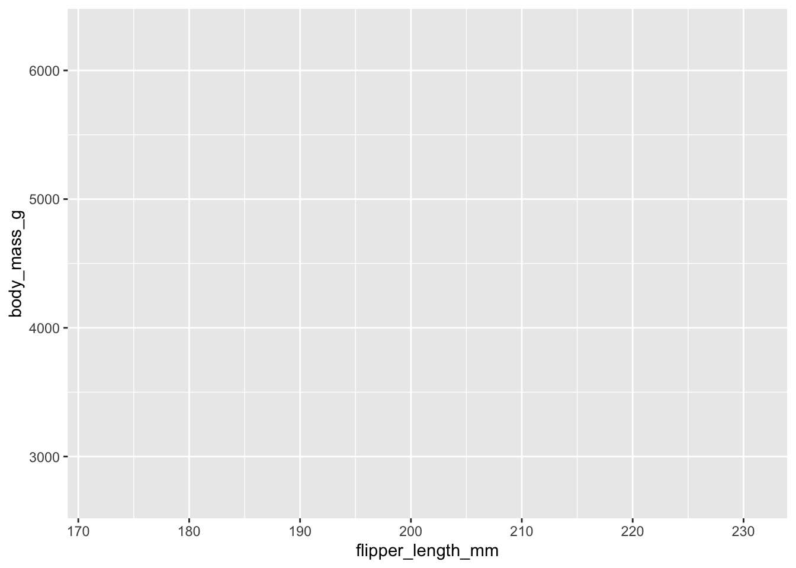
Our empty canvas now has more structure – it’s clear where flipper lengths will be displayed (on the x-axis) and where body masses will be displayed (on the y-axis). But the penguins themselves are not yet on the plot. This is because we have not yet articulated, in our code, how to represent the observations from our data frame on our plot.
To do so, we need to define a geom: the geometrical object that a plot uses to represent data. These geometric objects are made available in ggplot2 with functions that start with geom_. People often describe plots by the type of geom that the plot uses. For example, bar charts use bar geoms (geom_bar()), line charts use line geoms (geom_line()), boxplots use boxplot geoms (geom_boxplot()), scatterplots use point geoms (geom_point()), and so on.
Warning: Removed 2 rows containing missing values or values outside the scale range
(`geom_point()`).
Scatterplots are useful for displaying the relationship between two numerical variables, but it’s always a good idea to be skeptical of any apparent relationship between two variables and ask if there may be other variables that explain or change the nature of this apparent relationship. For example, does the relationship between flipper length and body mass differ by species? Let’s incorporate species into our plot and see if this reveals any additional insights into the apparent relationship between these variables. We will do this by representing species with different colored points.
To achieve this, will we need to modify the aesthetic or the geom? If you guessed “in the aesthetic mapping, inside of aes()”, you’re already getting the hang of creating data visualizations with ggplot2! And if not, don’t worry. Throughout the book you will make many more ggplots and have many more opportunities to check your intuition as you make them.
Warning: Removed 2 rows containing missing values or values outside the scale range
(`geom_point()`).
When a categorical variable is mapped to an aesthetic, ggplot2 will automatically assign a unique value of the aesthetic (here a unique color) to each unique level of the variable (each of the three species), a process known as scaling. ggplot2 will also add a legend that explains which values correspond to which levels.
Now let’s add one more layer: a smooth curve displaying the relationship between body mass and flipper length. Before you proceed, refer back to the code above, and think about how we can add this to our existing plot.
Since this is a new geometric object representing our data, we will add a new geom as a layer on top of our point geom: geom_smooth(). And we will specify that we want to draw the line of best fit based on a linear model with method = "lm".
Warning: Removed 2 rows containing non-finite outside the scale range
(`stat_smooth()`).
Warning: Removed 2 rows containing missing values or values outside the scale range
(`geom_point()`).
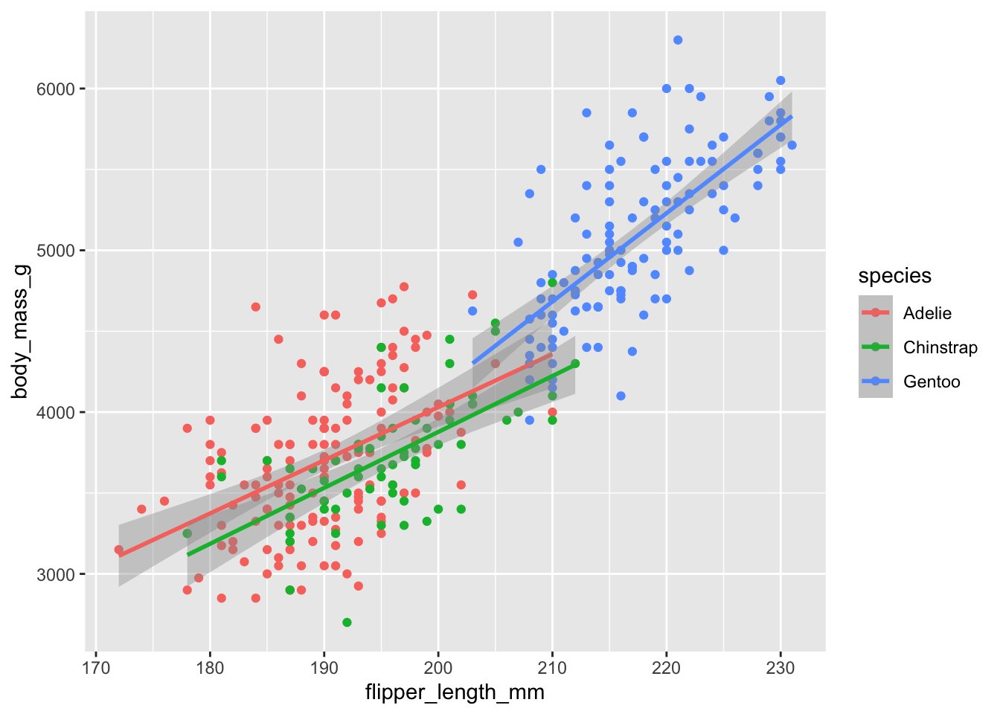
When aesthetic mappings are defined in ggplot(), at the global level, they’re passed down to each of the subsequent geom layers of the plot. However, each geom function in ggplot2 can also take a mapping argument, which allows for aesthetic mappings at the local level that are added to those inherited from the global level. Since we want points to be colored based on species but don’t want the lines to be separated out for them, we should specify color = species for geom_point() only.
Warning: Removed 2 rows containing non-finite outside the scale range
(`stat_smooth()`).
Warning: Removed 2 rows containing missing values or values outside the scale range
(`geom_point()`).
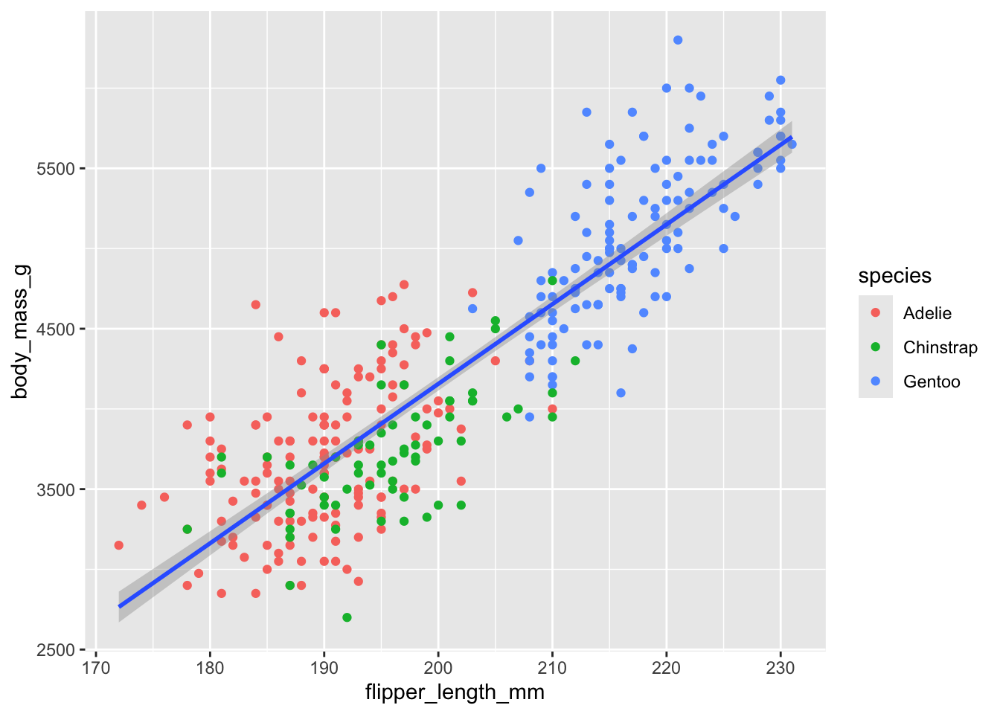
Voila! We have something that looks very much like our ultimate goal, though it’s not yet perfect. We still need to use different shapes for each species of penguins and improve labels.
It’s generally not a good idea to represent information using only colors on a plot, as people perceive colors differently due to color blindness or other color vision differences. Therefore, in addition to color, we can also map species to the shape aesthetic.
Warning: Removed 2 rows containing non-finite outside the scale range
(`stat_smooth()`).
Warning: Removed 2 rows containing missing values or values outside the scale range
(`geom_point()`).
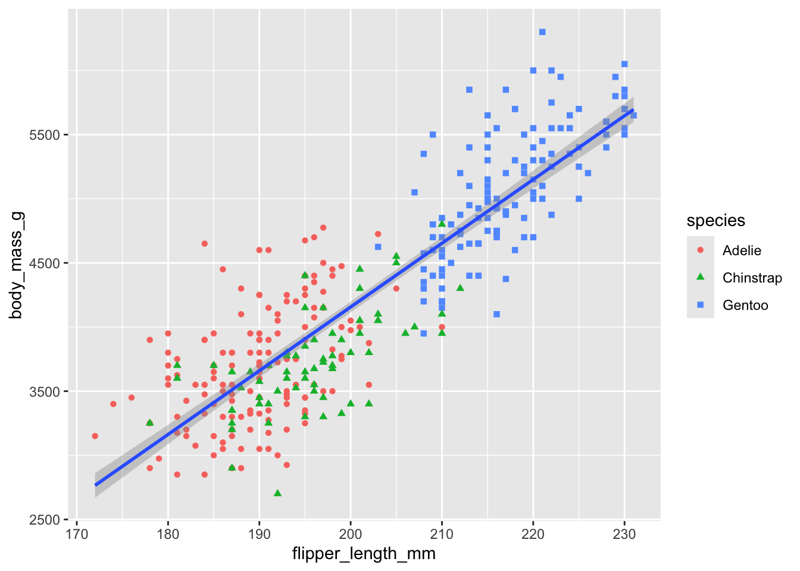
And finally, we can improve the labels of our plot using the labs() function in a new layer. Some of the arguments to labs() might be self explanatory: title adds a title and subtitle adds a subtitle to the plot. Other arguments match the aesthetic mappings, x is the x-axis label, y is the y-axis label, and color and shape define the label for the legend. In addition, we can improve the color palette to be colorblind safe with the scale_color_colorblind() function from the ggthemes package.
ggplot(data = penguins,mapping =aes(x = flipper_length_mm, y = body_mass_g )) +geom_point(mapping =aes(color = species, shape = species)) +geom_smooth(method = lm) +labs(title ="Body mass and flipper length",subtitle ="Dimensions for Adelie, Chinstrap, and Gentoo Penguins",x ="Flipper length (mm)", y ="Body mass (g)",color ="Species", shape ="Species" )
`geom_smooth()` using formula = 'y ~ x'
Warning: Removed 2 rows containing non-finite outside the scale range
(`stat_smooth()`).
Warning: Removed 2 rows containing missing values or values outside the scale range
(`geom_point()`).
What does the bill_depth_mm variable in the penguins data frame describe? Read the help for ?penguins to find out.
?penguins
a number denoting bill depth (millimeters)
Make a scatterplot of bill_depth_mm vs. bill_length_mm. That is, make a scatterplot with bill_depth_mm on the y-axis and bill_length_mm on the x-axis. Describe the relationship between these two variables.
Warning: Removed 2 rows containing missing values or values outside the scale range
(`geom_point()`).
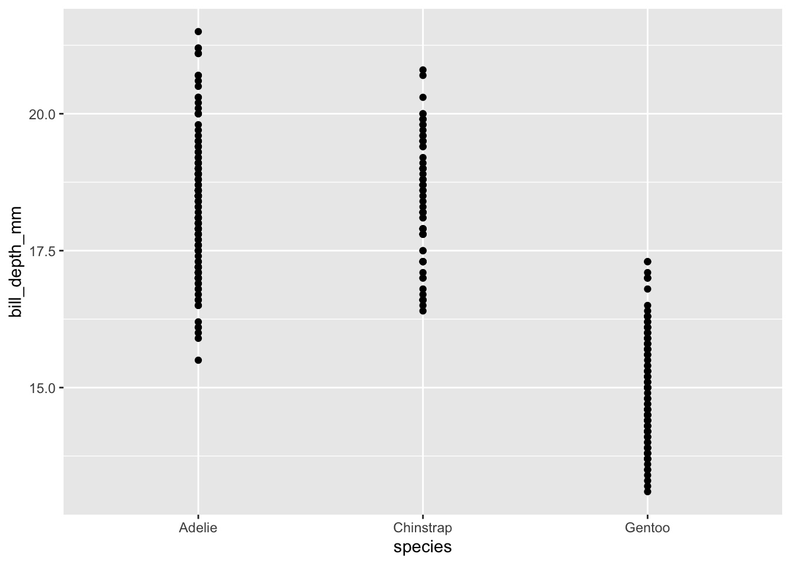
This produces an awkward scatter-plot, since the x-axis variable is discrete, and not continuous. A better choice of geom might be a box-plot, which is a good way to present the relationship between a continuous (Bill Depth) and a. categorical (species) variable. which shows that the average Bill Depth (in mm) is lower in Gentoo penguins compared to the other two.
Warning: Removed 2 rows containing non-finite outside the scale range
(`stat_boxplot()`).
Recreate the following visualization. What aesthetic should bill_depth_mm be mapped to? And should it be mapped at the global level or at the geom level?
`geom_smooth()` using method = 'loess' and formula = 'y ~ x'
Warning: Removed 2 rows containing non-finite outside the scale range
(`stat_smooth()`).
Warning: Removed 2 rows containing missing values or values outside the scale range
(`geom_point()`).
`geom_smooth()` using method = 'loess' and formula = 'y ~ x'
Warning: Removed 2 rows containing non-finite outside the scale range (`stat_smooth()`).
Removed 2 rows containing missing values or values outside the scale range
(`geom_point()`).
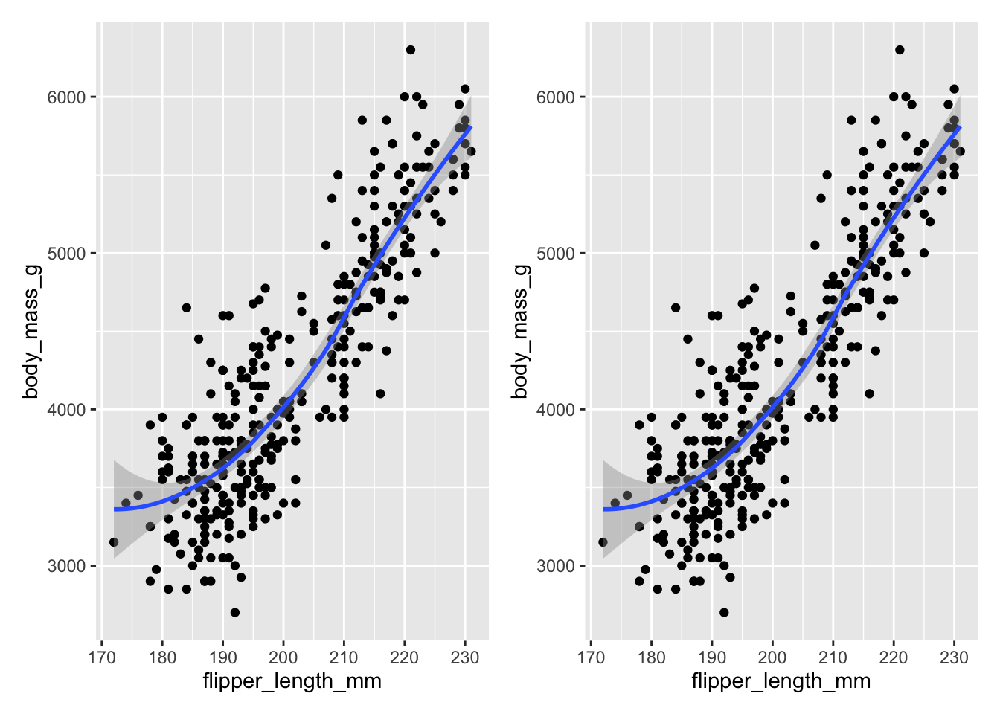
ggplot2 calls
As we move on from these introductory sections, we’ll transition to a more concise expression of ggplot2 code. So far we’ve been very explicit, which is helpful when you are learning.
Typically, the first one or two arguments to a function are so important that you should know them by heart. The first two arguments to ggplot() are data and mapping, in the remainder of the book, we won’t supply those names. That saves typing, and, by reducing the amount of extra text, makes it easier to see what’s different between plots.
ggplot(penguins, aes(x = flipper_length_mm, y = body_mass_g)) +geom_point()
Warning: Removed 2 rows containing missing values or values outside the scale range
(`geom_point()`).
In the future, you’ll also learn about the pipe, |>, which will allow you to create that plot with:
penguins |>ggplot(aes(x = flipper_length_mm, y = body_mass_g)) +geom_point(na.rm =TRUE)
Visualizing distributions
How you visualize the distribution of a variable depends on the type of variable: categorical or numerical.
1.4.1 A categorical variable
A variable is categorical if it can only take one of a small set of values. To examine the distribution of a categorical variable, you can use a bar chart. The height of the bars displays how many observations occurred with each x value.
penguins|>ggplot(aes(x = species)) +geom_bar()
In bar plots of categorical variables with non-ordered levels, like the penguin species above, it’s often preferable to reorder the bars based on their frequencies. Doing so requires transforming the variable to a factor (how R handles categorical data) and then reordering the levels of that factor.
A variable is numerical (or quantitative) if it can take on a wide range of numerical values, and it is sensible to add, subtract, or take averages with those values. Numerical variables can be continuous or discrete.
One commonly used visualization for distributions of continuous variables is a histogram.
Warning: Removed 2 rows containing non-finite outside the scale range
(`stat_bin()`).
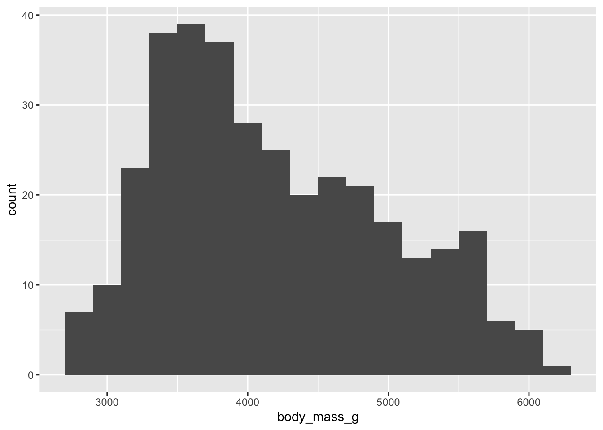
A histogram divides the x-axis into equally spaced bins and then uses the height of a bar to display the number of observations that fall in each bin. In the graph above, the tallest bar shows that 39 observations have a body_mass_g value between 3,500 and 3,700 grams, which are the left and right edges of the bar.
You can set the width of the intervals in a histogram with the binwidth argument, which is measured in the units of the x variable. You should always explore a variety of binwidths when working with histograms, as different binwidths can reveal different patterns. In the plots below a binwidth of 20 is too narrow, resulting in too many bars, making it difficult to determine the shape of the distribution. Similarly, a binwidth of 2,000 is too high, resulting in all data being binned into only three bars, and also making it difficult to determine the shape of the distribution. A binwidth of 200 provides a sensible balance.
An alternative visualization for distributions of numerical variables is a density plot. A density plot is a smoothed-out version of a histogram and a practical alternative, particularly for continuous data that comes from an underlying smooth distribution. We won’t go into how geom_density() estimates the density (you can read more about that in the function documentation), but let’s explain how the density curve is drawn with an analogy. Imagine a histogram made out of wooden blocks. Then, imagine that you drop a cooked spaghetti string over it. The shape the spaghetti will take draped over blocks can be thought of as the shape of the density curve. It shows fewer details than a histogram but can make it easier to quickly glean the shape of the distribution, particularly with respect to modes and skewness.
Warning: Removed 2 rows containing non-finite outside the scale range
(`stat_density()`).
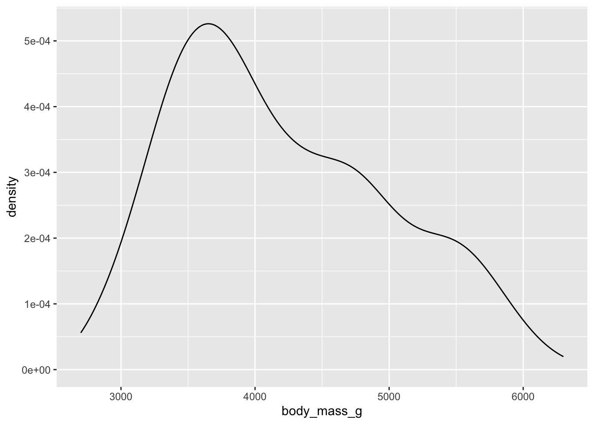
Exercises
Make a bar plot of species of penguins, where you assign species to the y aesthetic. How is this plot different? How are the following two plots different? Which aesthetic, color or fill, is more useful for changing the color of bars?
penguins|>ggplot(aes(y = species, fill = species)) +geom_bar()
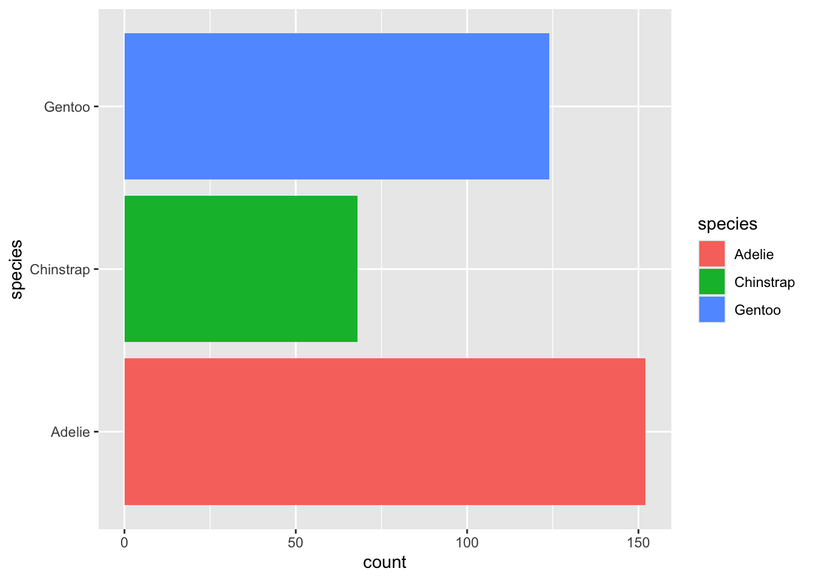
Make a histogram of the carat variable in the diamonds dataset that is available when you load the tidyverse package. Experiment with different binwidths. What binwidth reveals the most interesting patterns?
diamonds|>ggplot(aes(x = carat)) +geom_histogram(binwidth =0.1, fill ="blue", color ="black")
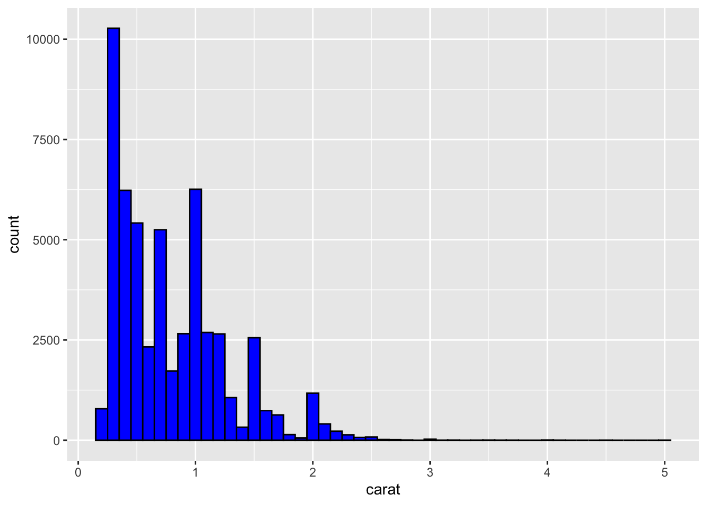
Visualizing relationships
To visualize a relationship we need to have at least two variables mapped to aesthetics of a plot. In the following sections you will learn about commonly used plots for visualizing relationships between two or more variables and the geoms used for creating them.
A numerical and a categorical variable
To visualize the relationship between a numerical and a categorical variable we can use side-by-side box plots. A boxplot is a type of visual shorthand for measures of position (percentiles) that describe a distribution. It is also useful for identifying potential outliers. As shown in Figure 1.1, each boxplot consists of:
A box that indicates the range of the middle half of the data, a distance known as the interquartile range (IQR), stretching from the 25th percentile of the distribution to the 75th percentile. In the middle of the box is a line that displays the median, i.e. 50th percentile, of the distribution. These three lines give you a sense of the spread of the distribution and whether or not the distribution is symmetric about the median or skewed to one side.
Visual points that display observations that fall more than 1.5 times the IQR from either edge of the box. These outlying points are unusual so are plotted individually.
A line (or whisker) that extends from each end of the box and goes to the farthest non-outlier point in the distribution.
penguins|>ggplot(aes(x = species, y = body_mass_g)) +geom_boxplot()
Warning: Removed 2 rows containing non-finite outside the scale range
(`stat_boxplot()`).
Alternatively, we can make density plots with geom_density().
penguins|>ggplot(aes(x = body_mass_g, color = species)) +geom_density()
Warning: Removed 2 rows containing non-finite outside the scale range
(`stat_density()`).
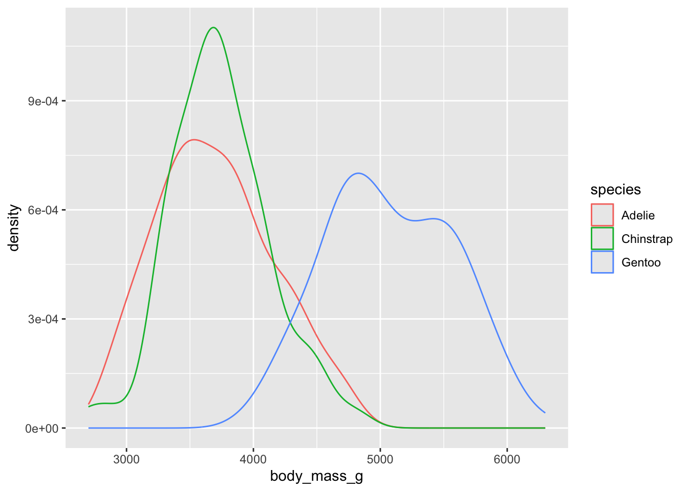
Additionally, we can map species to both color and fill aesthetics and use the alpha aesthetic to add transparency to the filled density curves. This aesthetic takes values between 0 (completely transparent) and 1 (completely opaque). In the following plot it’s set to 0.5.
penguins|>ggplot(aes(x = body_mass_g, color = species, fill = species)) +geom_density(linewidth =0.75,alpha =0.5)
Warning: Removed 2 rows containing non-finite outside the scale range
(`stat_density()`).
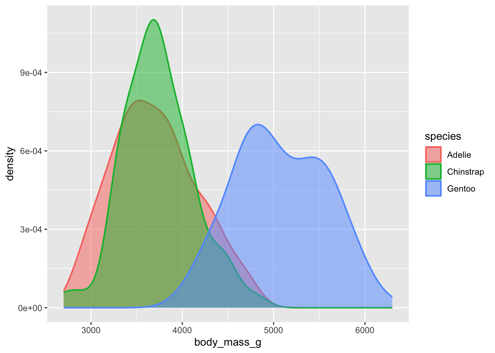
Two categorical variables
We can use stacked bar plots to visualize the relationship between two categorical variables. For example, the following two stacked bar plots both display the relationship between island and species, or specifically, visualizing the distribution of species within each island.
The first plot shows the frequencies of each species of penguins on each island. The plot of frequencies shows that there are equal numbers of Adelies on each island. But we don’t have a good sense of the percentage balance within each island.
penguins|>ggplot(aes(x = island, fill = species)) +geom_bar()
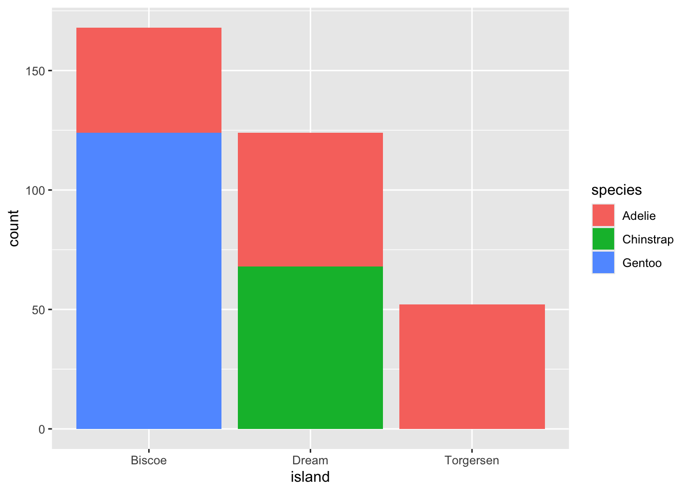
The second plot, a relative frequency plot created by setting position = "fill" in the geom, is more useful for comparing species distributions across islands since it’s not affected by the unequal numbers of penguins across the islands. Using this plot we can see that Gentoo penguins all live on Biscoe island and make up roughly 75% of the penguins on that island, Chinstrap all live on Dream island and make up roughly 50% of the penguins on that island, and Adelie live on all three islands and make up all of the penguins on Torgersen.
penguins|>ggplot(aes(x = island, fill = species)) +geom_bar(position ="fill")
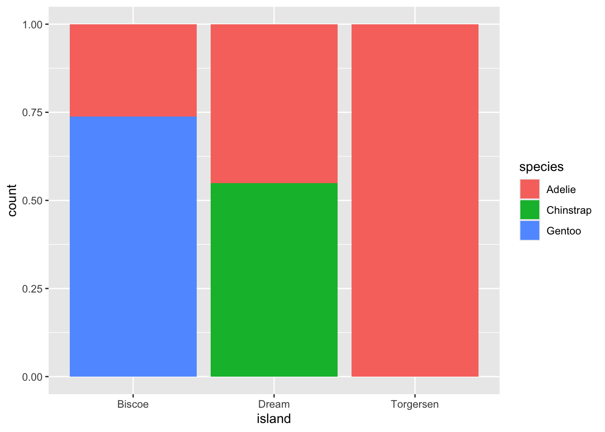
Two numerical variables
A scatterplot is probably the most commonly used plot for visualizing the relationship between two numerical variables.
ggplot(penguins, aes(x = flipper_length_mm, y = body_mass_g)) +geom_point()
Warning: Removed 2 rows containing missing values or values outside the scale range
(`geom_point()`).
Three or more variables
We can incorporate more variables into a plot by mapping them to additional aesthetics. For example, in the following scatterplot the colors of points represent species and the shapes of points represent islands.
Warning: Removed 2 rows containing missing values or values outside the scale range
(`geom_point()`).
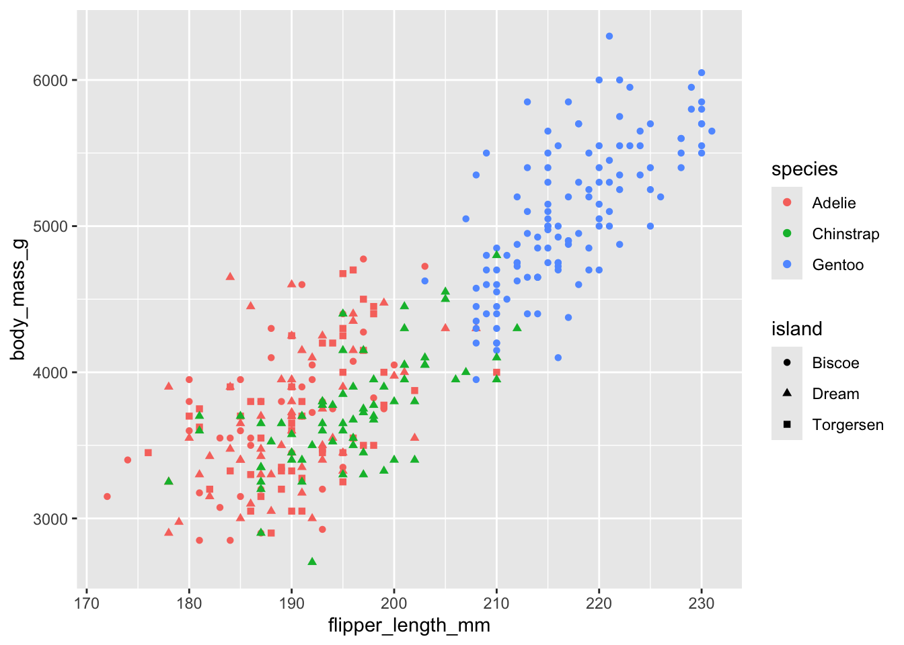
However adding too many aesthetic mappings to a plot makes it cluttered and difficult to make sense of. Another way, which is particularly useful for categorical variables, is to split your plot into facets, subplots that each display one subset of the data.
To facet your plot by a single variable, use facet_wrap(). The first argument of facet_wrap() is a formula, which you create with ~ followed by a variable name. The variable that you pass to facet_wrap() should be categorical.
The mpg data frame that is bundled with the ggplot2 package contains 234 observations collected by the US Environmental Protection Agency on 38 car models. Which variables in mpg are categorical? Which variables are numerical? (Hint: Type ?mpg to read the documentation for the dataset.) How can you see this information when you run mpg?
Make a scatterplot of hwy vs. displ using the mpg data frame. Next, map a third, numerical variable to color, then size, then both color and size, then shape. How do these aesthetics behave differently for categorical vs. numerical variables?
Make a scatterplot of bill_depth_mm vs. bill_length_mm and color the points by species. What does adding coloring by species reveal about the relationship between these two variables? What about faceting by species?
penguins|>ggplot(aes(x = bill_length_mm, y = bill_depth_mm, color = species)) +geom_point() +facet_wrap(~species)
Warning: Removed 2 rows containing missing values or values outside the scale range
(`geom_point()`).
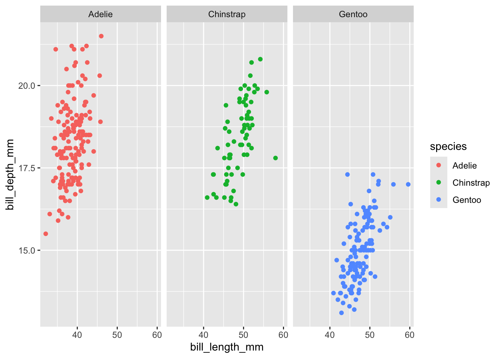
Why does the following yield two separate legends? How would you fix it to combine the two legends?
ggplot(data = penguins,mapping =aes(x = bill_length_mm, y = bill_depth_mm, color = species, shape = species )) +geom_point()
Warning: Removed 2 rows containing missing values or values outside the scale range
(`geom_point()`).
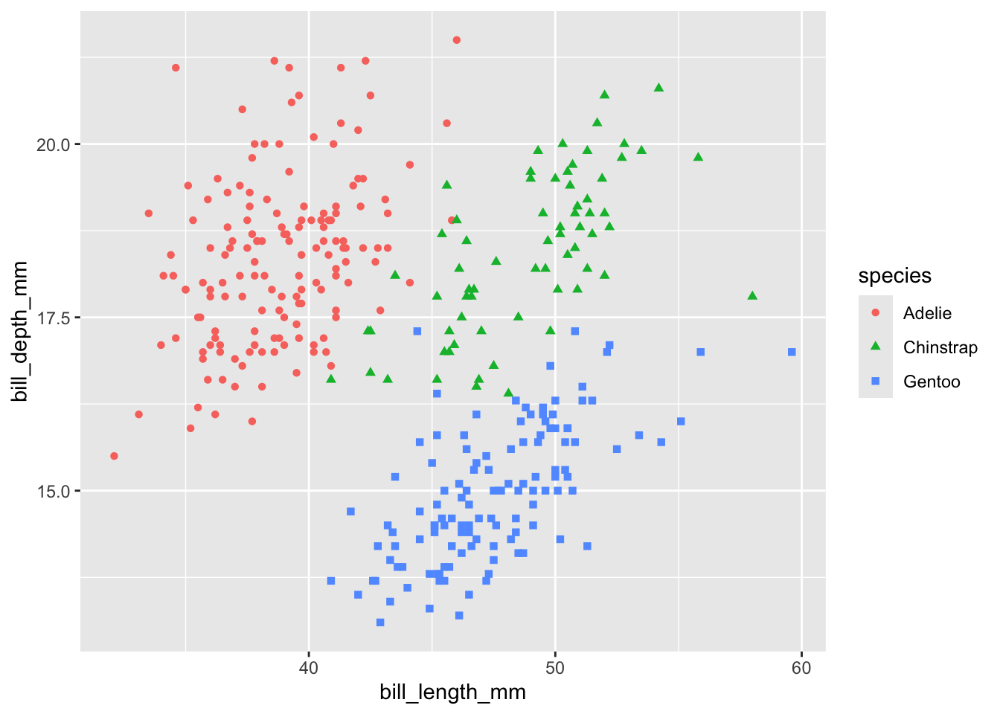
Create the two following stacked bar plots. Which question can you answer with the first one? Which question can you answer with the second one
ggplot(penguins, aes(x = island, fill = species)) +geom_bar(position ="fill")
ggplot(penguins, aes(x = species, fill = island)) +geom_bar(position ="fill")
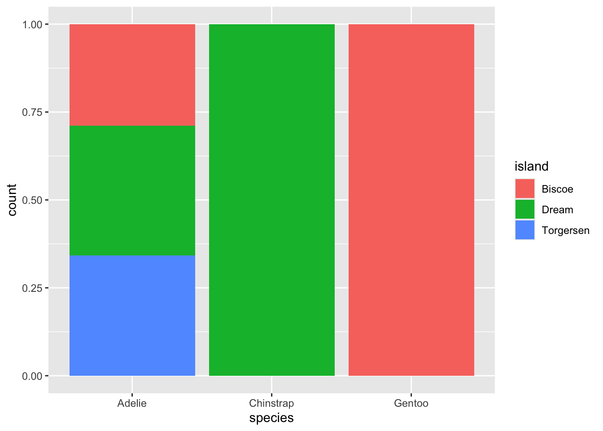
Saving your plots
Once you’ve made a plot, you might want to get it out of R by saving it as an image that you can use elsewhere. That’s the job of ggsave(), which will save the plot most recently created to disk:
ggplot(penguins, aes(x = flipper_length_mm, y = body_mass_g)) +geom_point()
Warning: Removed 2 rows containing missing values or values outside the scale range
(`geom_point()`).
ggsave(filename ="penguin-plot.png")
Saving 7 x 5 in image
Warning: Removed 2 rows containing missing values or values outside the scale range
(`geom_point()`).